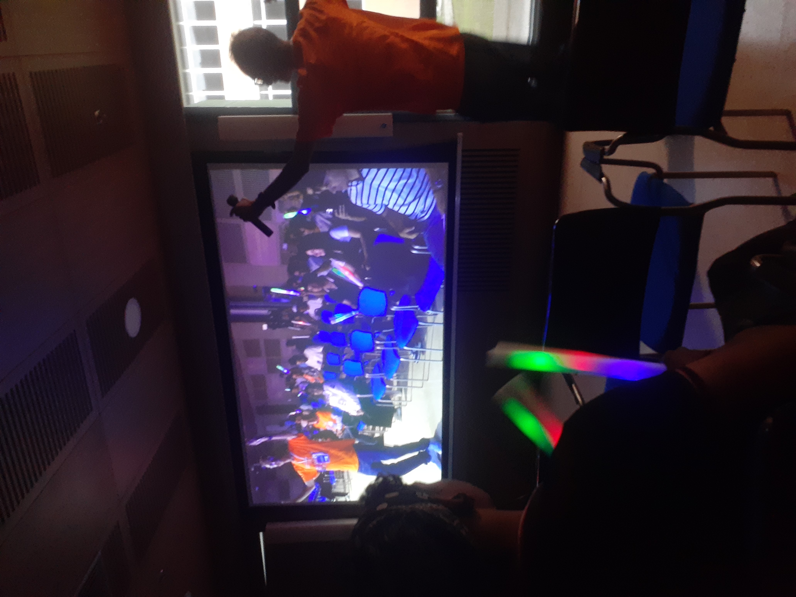

Bienvenido
Aquí podrás ver mi experiencia en la cuarta edición de la Universidad de la Felicidad en la Universidad del Magdalena.
Usa el menú superior para navegar entre las secciones.
Momentos del Festival
Reflexión Personal
Participar en la Universidad de la Felicidad fue una experiencia enriquecedora que me permitió comprender que la verdadera felicidad no se encuentra únicamente en los grandes logros, sino también en las pequeñas acciones cotidianas. Durante las jornadas, escuché diferentes perspectivas sobre lo que significa ser feliz: desde disfrutar un paseo en bicicleta hasta mantener el equilibrio entre la salud física y mental. Estos momentos me hicieron pensar en cómo, desde la programación web, también podemos aportar al bienestar de las personas. La tecnología puede ser una herramienta poderosa para conectar, inspirar y generar sonrisas, siempre que se use con propósito y empatía. Crear aplicaciones o páginas web que fomenten la creatividad, la comunidad y la expresión positiva puede transformar la experiencia universitaria en algo más humano y cercano. Este Festival me dejó la enseñanza de que el desarrollo tecnológico y la felicidad no son opuestos, sino aliados en la construcción de un entorno más alegre, solidario y consciente.Contador de Sonrisas 😊
¡Haz clic en el botón y comparte una sonrisa!
0 sonrisas
Evidencia de Asistencia
Nombre: Jader Isaac Torregroza Castro
Fecha y hora del evento: Viernes 17 de octubre 8:00am - 12:00pm
